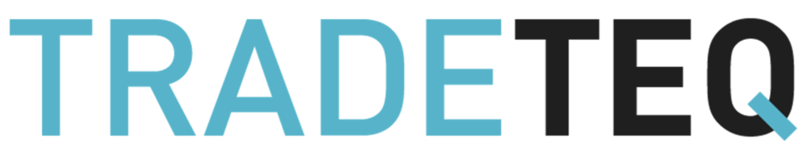
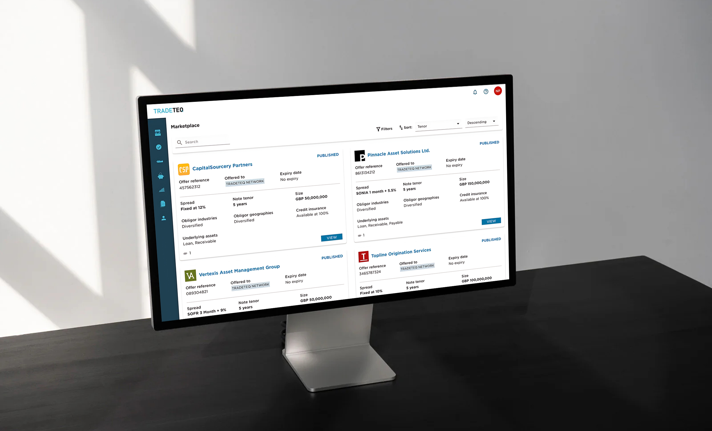
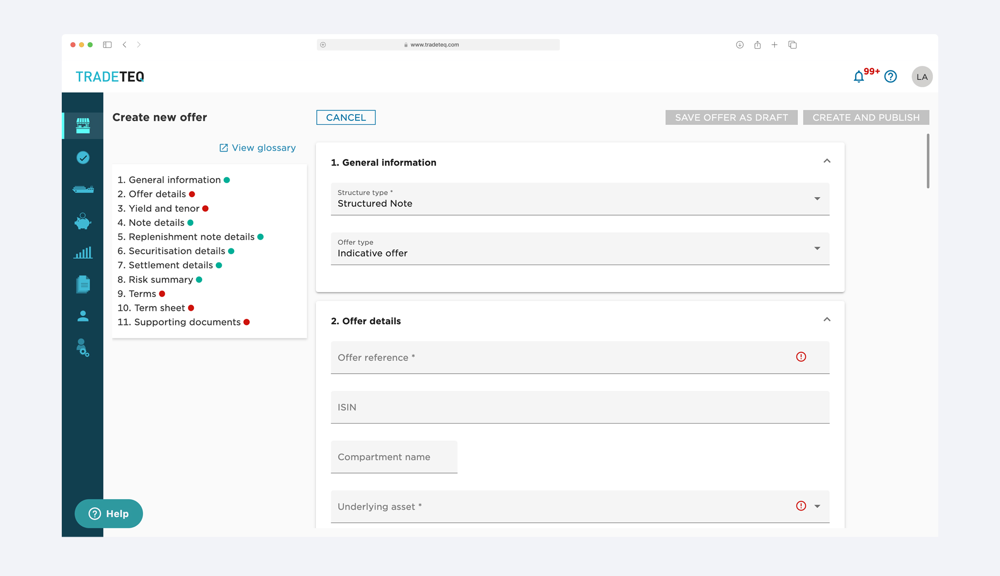
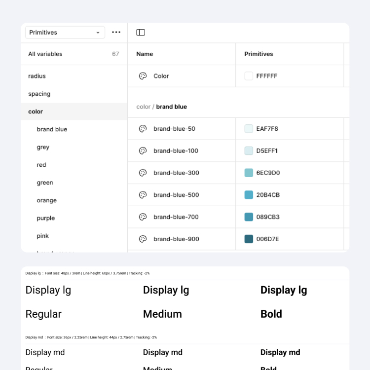
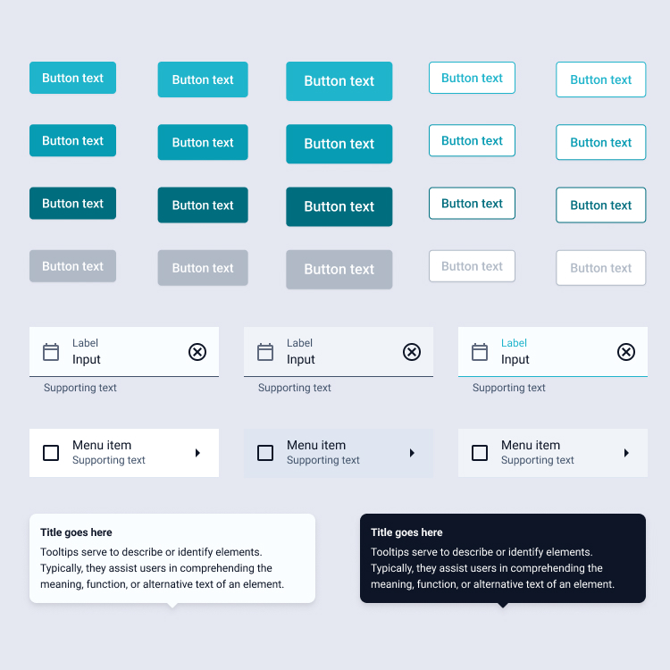
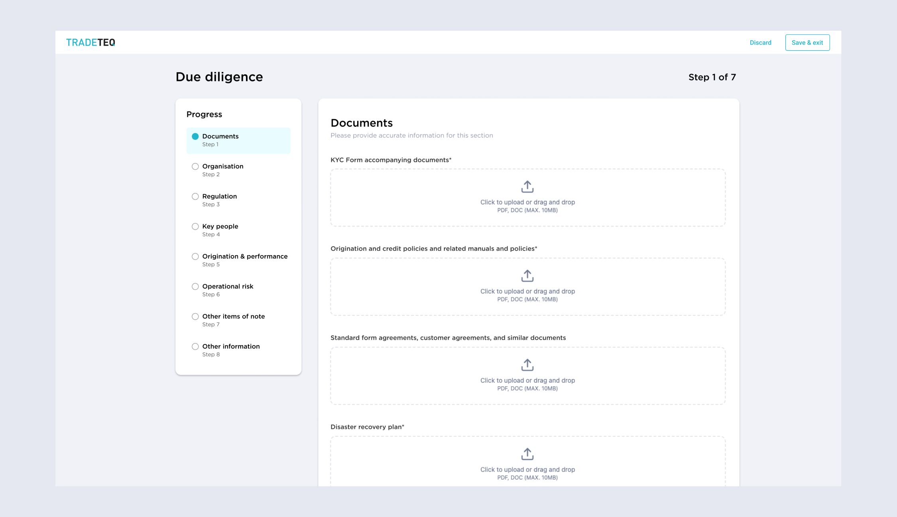

Designing a clearerexperiencefor trade finance.
At Tradeteq I worked on untangling a complex institutional platform: introducing structure, a design system and clearer UI for buying and selling trade finance assets.
Tradeteq is a fintech SaaS platform operating in the trade finance space. As it grew, the need for a stronger design foundation became clear. Screens were inconsistent, behaviours varied and new features were hard to integrate. My focus was on creating a coherent language that made incremental improvements easy instead of painful.
I documented patterns, tightened the visual system and created components that engineers could reuse, reducing one-off UI and lowering the cost of new feature work.
Project highlights

Existing UI
CTA's not aligned with form, long forms creating cognitive load, inconsistent UI


Design system glance
Token page with color ramps, type scale, components types

Updated UI
Sectioned flow, document checklist upfront, visual drag-and-drop upload area
Outcome
- Adoption began: tokens and early components landed in Storybook and started replacing legacy UI.
- Faster completion: due diligince time dropped from ~55 mins to ~25 mins.
- Less duplication: a simple review + deprecation path stopped one-off component copies.
- Set up to scale: as new front ends were built, the system became the default starting point.